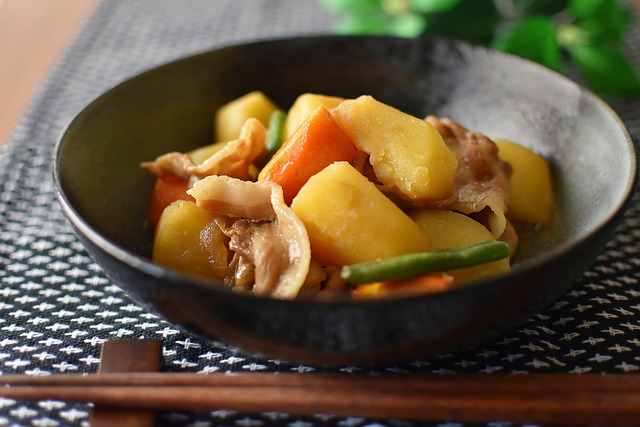

Nikujaga

Nikujaga - A delicious Japanese meat and potato stew!
Nikujaga is a Japanese dish that literally means "meat and potatoes" in
English. It is a type of stew made with sliced beef, potatoes, onions, and
carrots cooked in a sweetened soy sauce and mirin (a sweet rice wine)
broth. Other ingredients such as shirataki noodles, green beans, and
mushrooms may also be added depending on the recipe. Nikujaga is a popular
comfort food in Japan and is often served as a main dish with rice and
miso soup.
Ingredients
- Sliced beef
- Potatoes
- Onions
- Carrots
- Shirataki noodles (optional)
- Green beans (optional)
- Shiitake mushrooms (optional)
- Dashi (Japanese soup stock)
- Soy sauce
- Mirin (sweet rice wine)
- Sugar
- Vegetable oil
- Salt
- Water
Steps
-
In a large pot or deep frying pan, heat the vegetable oil over medium
heat.
- Add the sliced onion and cook until translucent.
- Add the sliced beef and cook until browned on all sides.
-
Add the dashi, soy sauce, mirin, and sugar to the pot and bring to a
boil.
-
Reduce the heat to low, cover the pot, and simmer for about 10-15
minutes.
-
Add the potatoes, carrots, shirataki noodles (if using), and enough
water to cover the ingredients.
-
Cover the pot and simmer for about 20 minutes, or until the vegetables
are tender.
-
Add the green beans and shiitake mushrooms (if using) and simmer for
another 5-10 minutes.
- Taste the broth and adjust the seasoning with salt if needed.
- Serve hot with steamed rice and miso soup on the side.
- Enjoy!
Home